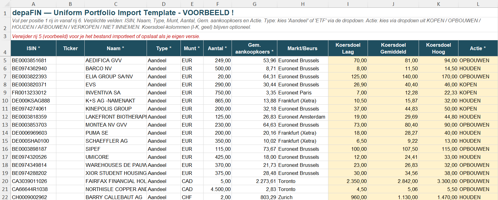
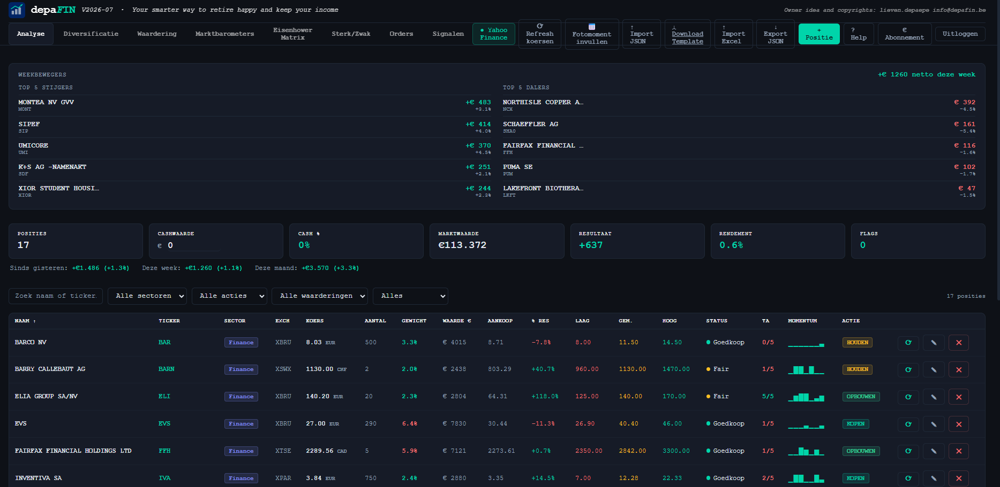

— Portefeuilleanalyse —Voor ervaren en startende beleggers in de Benelux
Zeven modules. Één beslissing.
depaFIN is een volledige portefeuilletool voor de belegger die opnieuw zicht wil krijgen op het geheel: DCF-waardering in drie scenario's, technische analyse, prioriteitenmatrix, orderbeheer en macrocontext — allemaal in één browserapp, zonder installatie.
Importeer je portfolio (Bolero...) of gebruik de template - vb hieronder.
Op basis van de onderstaande gegevens zal de app een conversie doen. Er wordt een onmiddellijke TA berekend, en live koersen + grafieken 1M 3M 1Y 3Y 5Y zijn beschikbaar. MA 50 en MA200 wordt uitgezet in tabblad Analyse.

Module 01 — Analyse
DCF in drie scenario's, per aandeel.
Elk aandeel krijgt een Bear, Base en Bull scenario op basis van koersdoelen, en/of DCF berekeningen. De intrinsieke waarde vergelijkt zich automatisch met de huidige koers. Status (Goedkoop / Fair / Duur) en actie zijn in één blik zichtbaar.
ℹ Bedragen zijn fictief.
depaFIN V2026-07 · Your smarter way to retire happy and keep your income

Module 02 — Eisenhower Matrix
Elk aandeel op zijn juiste plaats.
De matrix plot elke positie op twee assen: momentum (TA-score, Y-as) versus waardering (koers t.o.v. gemiddeld koersdoel, X-as). Vier kwadranten, vier acties. Automatisch geplot op basis van jouw data.
Momentum vs WaarderingAlle sectoren ▾
↑ Momentum (TA) · Sterk
● IDEAAL
MOMENTUM ●
● WAARDE
OPVOLGEN ●
50%
100%
150%
INVE-B
-0.4%
AED
13.2%
FFH
21.1%
BRK-B
-9.0%
MELI
33.1%
MSFT
51.5%
ZTS
61.7%
MONT
19.6%
← Goedkoop · Koers / Gemiddeld Koersdoel · Duur →
● IDEAAL — Goedkoop + Sterk momentum
Koers is minder dan 50% van gemiddeld koersdoel met positieve TA trend. Koopzone.
● MOMENTUM — Boven koersdoel maar stijgend
Koers is boven 50% van gemiddeld koersdoel en momentum is positief. Bijhouden.
● WAARDE — Goedkoop maar zwak momentum
Intrinsiek goedkoop maar markt ziet het nog niet. Geduld vereist.
● OPVOLGEN — Boven koersdoel + Zwak momentum
Koers is boven 50% van gemiddeld koersdoel én dalende trend. Afbouwen of vermijden.
Bubbelgrootte toont het gewicht van de positie t.o.v. andere. De matrix wordt automatisch bijgewerkt bij elke koersrefresh. Klik op een bubbel om naar de positie te gaan.
Posities ingedeeld in vijf zones op basis van hun positie t.o.v. het 52-weeks hoogste koers. Van Sterk (80–100%) tot Zeer zwak (0–19%). Automatisch gesorteerd, geen subjectiviteit.
Sterk80 – 100%6 posities
INVE-B
99.2%
Holding
BRK-B
97.1%
Holding
AED
90.7%
Estate
FFH
89.4%
Holding
MONT
85.7%
Estate
4COP
82.4%
Material
Matig sterk60 – 79%2 posities
MELI
71.0%
Non-Cycle
MSFT
68.8%
Techno
Neutraal40 – 59%1 positie
ZTS
51.6%
Health
Zwak20 – 39%0 posities
Geen posities in deze zone
Zeer zwak0 – 19%0 posities
Geen posities in deze zone
Ranking op basis van koers t.o.v. 52-weeks hoogste koers. Filterable op zone en sector. Geeft snel zicht op welke posities momentum verliezen.
5 krachtzones52W positieSector-filterZone-filter
Module 04 — Orders
Koop- & verkoopsignalen op het juiste moment.
De Orderstab toont posities met actieve vlaggen: aandelen waarvan de koers binnen 5% van een limiet of stop is genaderd. Geen manuele opvolging nodig — depaFIN signaleert automatisch.
Posities met actieve vlaggen · Koers binnen 5% van limiet of stop
Koopsignaal — Koers nadert limiet (1)
MONTEstate
Montea NA
Koers nadert limiet (bijkopen) — 65
Koers67.20 EUR
Limiet65.00
Gem. koersdoel80.40
Upside19.6%
TA score1/5
ActieOPBOUWEN
Limiet- en stopprijzen worden ingegeven per positie. Wanneer de koers binnen 5% van de triggerprijs komt, verschijnt de positie automatisch in de Orderstab. Zo mis je geen bijkoopmomenten.
Sector, beurs, munt en actie — elk met een donutgrafiek en horizontale balk. Live gewichten herberekend bij elke koersupdate.
Sector
Holding79.2%
Estate11.6%
Material3.9%
Health2.6%
Techno2.6%
Non-Cycle0.0%
Beurs (Exchange)
XSTO67.3%
XNYS13.1%
XBRU11.6%
XTSE4.1%
XFRA3.9%
XNAS0.0%
Munt
SEK67.3%
EUR15.6%
USD13.1%
CAD4.1%
Actie nav DCF
HOUDEN81.7%
OPBOUWEN18.3%
Elke dimensie heeft een donutgrafiek + horizontale balk. Gewichten worden live herberekend bij elke Yahoo Finance refresh. FX-koersen worden automatisch verrekend naar EUR.
Sector (GICS)BeursMuntActie nav DCFLive gewichtenFX auto-conversie
Module 06 — Waardering
P/E meters per aandeel, gefilterd per sector.
De Waarderingstab toont voor elke positie twee snelheidsmeters: Koers/Winst (P/E) en Koers/Boekwaarde (P/B). Je kan filteren op sector of alle posities tegelijk bekijken. Zo zie je in één oogopslag welke aandelen duur of goedkoop zijn t.o.v. hun sectorgenoten.
depaFIN V2026-07 · Waardering
Analyse
Diversificatie
Waardering
Marktbarometers
Eisenhower Matrix
Sterk/Zwak
Orders
Filter sector: Alle sectoren ▾
Zoetis Inc.
ZTS
Health
Koers / Winst (P/E)
11.3
Koers / Boekwaarde (P/B)
9.9
Fairfax Financial
FFH
Holding
Koers / Winst (P/E)
8.3
Koers / Boekwaarde (P/B)
1.3
MercadoLibre
MELI
Non-Cycle
Koers / Winst (P/E)
41.6
Koers / Boekwaarde (P/B)
12.1
Microsoft
MSFT
Techno
Koers / Winst (P/E)
22.3
Koers / Boekwaarde (P/B)
8.1
P/E en P/B worden live opgehaald via Yahoo Finance. De meter loopt van groen (laag = goedkoop) naar rood (hoog = duur). Filteren op sector laat toe om aandelen binnen dezelfde sector te vergelijken.
P/E per aandeelP/B per aandeelFilter per sectorAlle posities tegelijkYahoo Finance live
Module 07 — Marktbarometers
Macro in één scherm.
Van energie en edelmetalen tot agri en ETF-proxy's — elke grondstof en macro-indicator met een klikbare grafiek (1M / 3M / 1Y) en trendlijn. Rechtstreeks via Yahoo Finance.
YAHOO
🔍 Zoek ticker op Yahoo Finance
SENTIMENT
😨 Fear & Greed
ENERGIE
🛢 Brent Oil
🛢 WTI Oil
🔥 Nat. Gas
EDELMETALEN
🥇 Goud
🥈 Zilver
⚪ Platina
⚪ Palladium
IND. METALEN
🔶 Koper
⬜ Aluminium
AGRI
🌾 Tarwe
🌽 Mais
🫘 Soja
☕ Koffie
🍫 Cacao
🍬 Suiker
ETF PROXY
⚛ Uranium
🔋 Lithium
💊 Fosfaat
🔶 Koper miners
Platina PL=F
1647.30 -21.3% (3M)
1M
3M
1Y
✕ Sluiten
Elke barometer opent een interactieve grafiek met 1M/3M/1Y weergave en trendlijn. Grondstoffen geven context bij je DCF-aannames: stijgend koper → hogere inputkosten, dalende olie → lagere WACC voor energiebedrijven.
depaFIN is een levend project. Twee functionaliteiten zijn momenteel in onderzoek voor toekomstige versies.
In onderzoek
Meerwaardebelasting
Automatische berekening van de meerwaardebelasting op gerealiseerde winsten, rekening houdend met de Belgische fiscale regelgeving. Integratie in het rendementoverzicht zodat het netto rendement na belasting zichtbaar wordt.
In onderzoek
Damodaran Lifecycle Circle
Koppeling met het Damodaran levenscyclusmodel: elke positie wordt gepositioneerd op de bedrijfslevenscyclus (startup → groei → matuur → neergang). Dit geeft context bij de DCF-aannames en helpt bij het inschatten van het juiste groeiscenario per fase.
Beschikbaarheid
depaFIN is nu beschikbaar.
Volledige browserapp, geen installatie. Alle 7 modules meteen beschikbaar.